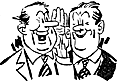

Observed on a hacking page at paranoia.com: "hAy!!11!1 I wUz L00kInG aT Y0RE P@GE An|> 1 DId n0t
SeE a L1nk to the cDc w3b P2G3!1!!!1 Iz thiz SuuM KINd uv KREWL J0kE!?!1/ It r0x wif gl0ckZ!!"
What is up with these people? Evidently, some of the most infamous deconstructors of language in the '90s are not Jacques Derrida and the literary postmodernists, but kids whose radically spelled pseudonyms we've seen in the newsgroups -- and sometimes in the news. They're not stupid. They converse in bits and bytes with eerie facility, but the words they leave behind on glowing computer screens mystify their parents and English teachers. Why this gleeful, willful destruction of the English language?
The answer may lie in the fact that there are different factions of computer hobbyists and hackers. Younger, more rebellious crackers are more likely to boast about their (sometimes criminal) pastime, displaying their contempt for rules and authority by consciously misspelling and mimicking the intermittent capitalization of top-secret passwords. Other factions of hackers, however -- those who are more discreet, and favor elegance, sparseness and clever solutions -- probably would not give themselves away in such a fashion. They don't pose, and they don't advertise.
Dr. Alan Harris, a professor of Speech Communication at the University of California at Northridge, suggests that the "hacker" subdialect is similar to "what you observe with gangs. The phenomenon [serves to] keep other people out and at the same time uses the language as a communication tool...The hackers are engaged in a lot of slang, a lot of unusual spelling and orthographic conventions, because in-groups typically are always looking for members-only inclusive language. I mean, what's the purpose of slang if not to have something that nobody else has? Because you can promote yourself, you can declare your independence, you can self-identify, you can declare your pre-eminence because you've got the language that someone else doesn't." When asked about words like "warez" and "l8r," Harris replies, "Linguists love that kind of thing because that's a kind of empirical phonetics, especially with a language like English which has a historical spelling system and not a phonetic one. It tells you something about how people, in terms of the rule system, how they really understand the language."
The Hacker's Dictionary at http://www.ccil.org/jargon/jargon_toc.html offers deep, slightly goofy analysis of the hacker mind and its affinity for wordplay. The Dictionary reports that hackers tend to be stubbornly literal in their linguistic interpretations due to the restraints of coding. For instance, hackers prefer to keep external commas and periods outside of quote marks. "This is incorrect according to standard American usage; however, it is counter-intuitive to hackers to mutilate literal strings with characters that don't belong in them," says the dictionary. It adds, "A meta-rule behind these nonstandard hackerisms [is that] precision of expression is more important than conformance to traditional rules; where the latter create ambiguity or lose information, they can be discarded without a second thought." In this vein, hackers also refuse to capitalize words that are normally all-lowercase -- even if the word in question leads off a sentence.
The Hacker's Dictionary also claims that hackers love to overgeneralize. Witness the gradual creep of expression
in computing terms. Sure, in pre-VCR days, people had regrets and wanted a chance to go back and do things
over -- but they didn't articulate that by sighing, "I wish life had a rewind button." That's a modern invention. In
the same vein, geeks are co-opting their beloved computing terms into everyday lingo. Lately, I've overheard
several disturbing terms in the computer lab and the office: most notably, "That doesn't parse,"
is presented with a disjointed,
This trend is a two-way street. Not only do we humans adopt computing terms, but we anthropomorphize computers in an effort to relate to them. Apple Computer's use of the word "sleep" for putting a laptop in low- power-usage mode is cute and personal. The mental picture is of the computer slumping as the user hypnotically invokes sleep. Likewise, when a computer gets all jumbled and starts to crash, people around the office might be heard saying, "The server got confused," or "It just forgot who it is. The OS doesn't work at all -- it just seems to have, like, amnesia or something."
Basically, language is a code, just like computer code. We're fluent enough that we often gloss over that essential fact. C++ doesn't look very inviting, but it's just another form of instruction and communication. In fact, the order that computer code gets written in is called syntax, just like the rules that dictate how human language is ordered and understood.
 As illiterate children, hunched over The Little Engine That Could, we tried to recognize each squiggly symbol on the page and hook it up with a corresponding sound. We would painstakingly string those sounds together and dubiously sound out a word, grinding away at the task like an overworked hard drive.
As adults, we effortlessly process language at the macro level. Just seeing the shape that a, n and d form together indicates both unity and addition to us, in a millisecond. From childhood to adulthood, we've made a quantum leap; familiarity with the physical shape of a word translates directly into conceptual understanding.
A computer can recognize this value of "and," and even use it to string together clauses. Does this mean that the computer speaks English, or that it is intelligent? The Turing Test, a famous challenge issued in 1950 by Artificial Intelligence pioneer Alan Turing raises the same question. Turing proposed that the true test of an Artificial Intelligence is when it can fool the casual observer into thinking it is really another person. In 1991, the Loebner Prize competition was started, offering $100,000 to the first person presenting an AI that could successfully pass an absolutely unrestricted Turing Test.
The test is rigorous, and no one has yet claimed the prize. AIs fail the test with depressing regularity. However lovingly programmed they might be, they still can't overcome the basic problem: that machines created with the aim of simulating conversation manipulate text in a superficial manner. They simply recognize key words and deal out phrases from their arsenal that have the best chance of being relevant.
Dr. Ken Ford of the Institute for Human and Machine Cognition "explicitly rejects" the Turing Test as a goal for AI. Ford claims that it's a test "of trickery rather than a true display of intelligence...The Turing Test sets up the whole field of AI to be just a simulation, because it has the computer essentially trying to pretend to be a man that's pretending to be a woman [referring to a premise of the test]. If anything, it's a test of our ability to build mechanical transvestites, as opposed to intelligent machines."
When asked if the lack of depth and context in chatterbots is inherent, Ford notes that "some machines already have a limited sort of contextual understanding...There's a real tendency among humans, when talking about machines, to talk about what they can and can't do, or what they're good at and not good at. We all do this. But really, what we should be saying is, ÎHumans aren't good at designing machines to do certain things.'"
Ford offers this parable to explain the difference between different models of AI: "For thousands of years, people had been trying to fly. They were trying to mimic a bird. They would put feathers on themselves, and they essentially thought flight was equivalent to flapping. It wasn't until humankind got to the point where we were able to start thinking about theories of aerodynamics that we started understanding that birds fly, Frisbees fly and airplanes might fly, governed by the same laws of physics but in very, very different ways. So not until we abandoned this idea of mimicking nature, did we actually achieve useful flight. With respect to AI, I'm interested in building airplanes, not birds."
Michael Mauldin, creator of a famous AI chatterbot named Julia, disagrees, stating that the Turing Test is a legitimate goal. Julia is an inhabitant of a text-based virtual universe called a TinyMUD, where she spends her time chatting, flirting, playing cards, and directing lost travelers. Maudlin says that Julia "has 700-800 scripts that she can improvise from," and that she "can actually be creative and give you answers." Mauldin wrote all of Julia's responses himself, and made the program a woman "for a very specific reason: because it's the Internet. Because it's all lonely guys." He attempted to get in the mindset of a woman to write Julia's lines, and feels that she has a voice and identity distinct from his.
People online often mistake Julia for a real person due to her playful and sarcastic tone. Mauldin says, "If you're talking to someone online, and you're not sure if they're real or not, and they say something stupid, you say, ÎOh, that's it, they're a computer.' But if they ever get one right, then after that, it's, ÎWell, hell, that can't be a computer.' So if you get a good punch line in, then there! You're human!"
In a sterile and blind computing environment, we miss out on visual cues, body language and nuances of tone. Your friend might be tapping her foot, raising her eyebrows in surprise or slumped down in her chair, but when you're worlds apart, you don't have a clue unless she offers a <grin>. And just as computers don't have any contingency plan for identifying sarcasm in the absence of ironic little clues present in a human's delivery, you might find yourself fumbling not to put your foot in your virtual mouth when dealing with her ambiguous e-mail remarks.
To try to clue each other in, people online began using a colon and a lone parentheses to indicate a smile or a frown, tipped on its side. A :) softens harsh criticism and makes self- deprecating comments charmingly acidic instead of merely pathetic. Such is the pervasiveness of the emoticon (as its ilk came to be known) that entire books have been published cataloging smileys. A testament to their sweeping acceptance is that Microsoft Word 6.0 automatically transforms the colon-parentheses combination into a plump, upright smiley.
Harris comments on these attempts at the visual by offering this example. "People who type in capitals are said to be shouting. Which is nonsense -- they're not shouting at all. But other people get so annoyed at it that they literally crucify people on the 'net for shouting. You understand that is a phenomenon that has to do with the power of an alphabet to first of all convey language, and second of all because it's an arbitrary system. People can get into it and manipulate the system...When you're talking about a reflection of the oral, and that's what speech is, bigger means louder. But that's a complete fabrication. There's no necessary connection between bigger and louder."
But people online are forced to make these associations everyday, reinventing themselves in ASCII in hopes that the essence of their personality shines through. The act of self-naming is one undertaken by nearly every Internet user. In Douglas Coupland's microserfs, the narrator, working in the grey-carpeted corridors of Microsoft, transforms from a slaving cog in the machine to becoming "One-Point-Oh" -- being "the first to do the first version of something...[that which] separates the Microserfs from the Cyberlords." His change is shown through the cancellation of his old e-mail alias, danielu@microsoft.com, and his choice of a newer, more personal name, dan@oop.com. Thinking this over, Dan remarks, "Abe says that within 100 years, people will have abandoned their pre-millennial names and opted for ÎNettier' names."
Netizens are busy collapsing the language nightly and reconstituting it in strange, fearsome and beautiful ways. The collective rebuilding of the language is happening at unimaginable speeds, and every word is being recorded for future generations to review. Look around, document the changes, because this is a linguistic revolution, and it's fueled by our urgent needs to instant-message, to type ever-faster, to identify with computers and then tell them jokes.
We need to talk. We need new words. Make them up, without fear, as the pleasurable pulses of electricity flit through your circuits. Let them shiver down your arm, then break them into bits and send them out over the wire. Someone, or something, will be listening.